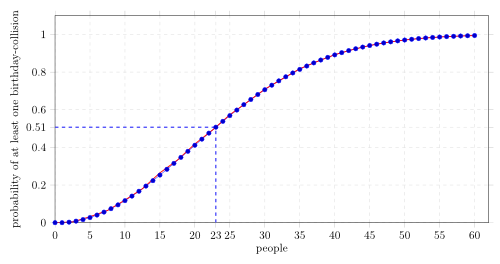

I guess many of you might need to plot functions or data once. So I've made one example that shows much of the features you might need:
- You can see how to change the axis' from normal linear scale to logarithmic scale.
- Some axis-manipulations were used.
- I have used a CSV-file to import and plot data.
- The red line was drawn with a mathematical function.
Best of all: I didn't use anything which is not in LaTeX ☺ (Well, the generation of the CSV-file doesn't count. I just wanted to include such an example for physicists who might need to plot results of experiments).
The complete source is in the Birthday Paradox Archive.
Result
{kind=link}

LaTeX-Code
The following LaTeX-Code used TikZ and PGFplots:
% Plot of the probability that two people out of n people have the
% same birthday.
% Author: Martin Thoma
% Source: ../plotting-graphs-with-pgfplots/
\documentclass{article}
\usepackage[pdftex,active,tightpage]{preview}
\setlength\PreviewBorder{2mm}
\usepackage{pgfplots}
\usepackage{tikz}
\usetikzlibrary{arrows, positioning, calc}
\begin{document}
\begin{preview}
\begin{tikzpicture}
\begin{axis}[
width=15cm, height=8cm, % size of the image
grid = major,
grid style={dashed, gray!30},
%xmode=log,log basis x=10,
%ymode=log,log basis y=10,
xmin=0, % start the diagram at this x-coordinate
xmax=62, % end the diagram at this x-coordinate
ymin=0, % start the diagram at this y-coordinate
ymax=1.1, % end the diagram at this y-coordinate
/pgfplots/xtick={0,5,...,60}, % make steps of length 5
extra x ticks={23},
extra y ticks={0.507297},
axis background/.style={fill=white},
ylabel=probability of at least one birthday-collision,
xlabel=people,
tick align=outside]
% import the correct data from a CSV file
\addplot table [id=exp]{data.csv};
% mark x=23
\coordinate (a) at (axis cs:23,0.507297);
\draw[blue, dashed, thick](a -| current plot begin) -- (a);
\draw[blue, dashed, thick](a |- current plot begin) -- (a);
% plot the stirling-formulae
\addplot[domain=0:60, red, thick]
{1-(365/(365-x))^(365.5-x)*e^(-x)};
\end{axis}
\end{tikzpicture}
\end{preview}
\end{document}
I generate the images directly with this Makefile:
SOURCE = birthday-paradox
DELAY = 80
DENSITY = 300
WIDTH = 500
make:
pdflatex $(SOURCE).tex -output-format=pdf
make clean
clean:
rm -rf $(TARGET) *.class *.html *.log *.aux
gif:
pdfcrop $(SOURCE).pdf
convert -verbose -delay $(DELAY) -loop 0 -density $(DENSITY) $(SOURCE)-crop.pdf $(SOURCE).gif
make clean
png:
make
make svg
inkscape $(SOURCE).svg -w $(WIDTH) --export-png=$(SOURCE).png
transparentGif:
convert $(SOURCE).pdf -transparent white result.gif
make clean
svg:
#inkscape $(SOURCE).pdf --export-plain-svg=$(SOURCE).svg
pdf2svg $(SOURCE).pdf $(SOURCE).svg
# Necessary, as pdf2svg does not always create valid svgs:
inkscape $(SOURCE).svg --export-plain-svg=$(SOURCE).svg